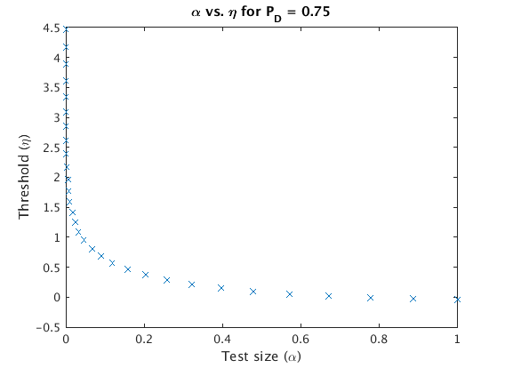

echo on % % Problem Statement: Consider the log-likelihood detection problem of two % scalar Gaussians with different means u0 and u1, and common variance % sigma^2. d = abs(u0 - u1) and z = (sigma*eta/d) + d/(2*sigma). The false % alarm probability alpha = Q(z) and the probability of correct detection % PD = Q(z - d) = 0.75. Compute and plot the threshold eta vs alpha. % Explain the plot and interpret the result. echo off % Find Q(x) z=[-6:0.001:6]; q=erfc(z); PD = 0.75; % Find the closest value of z-d for Q(z-d)=0.75 closest_vals = abs(q-PD); min_idx = find(closest_vals == min(closest_vals)); z_d = z(min_idx); alpha = []; eta = []; % Generate alpha vs eta for z = 0:0.1:3 d = z + z_d; eta = [eta, z*d - (d^2)/2]; alpha = [alpha, erfc(z)]; end figure; plot(alpha, eta, 'x'); title('\alpha vs. \eta for P_D = 0.75'); ylabel('Threshold (\eta)'); xlabel('Test size (\alpha)'); echo on % Interpretation: Fixing PD = 0.75 also sets the SNR (and therefore the % separator of the two Gaussians, represented by d). For this fixed PD, a % lower threshold results in a large probability of false alarm alpha. I % plotted alpha all the way up to 1, but in reality we would only allow % alpha to reach 0.5 before simply switching the meaning of our hypotheses; % the maximum error for binary detection should be 0.5. As alpha approaches % zero, the corresponding threshold becomes large at an increasing rate. Of % course, we cannot choose a threshold that results in an alpha of zero % since Gaussian tails are infinite.
% % Problem Statement: Consider the log-likelihood detection problem of two % scalar Gaussians with different means u0 and u1, and common variance % sigma^2. d = abs(u0 - u1) and z = (sigma*eta/d) + d/(2*sigma). The false % alarm probability alpha = Q(z) and the probability of correct detection % PD = Q(z - d) = 0.75. Compute and plot the threshold eta vs alpha. % Explain the plot and interpret the result. echo off